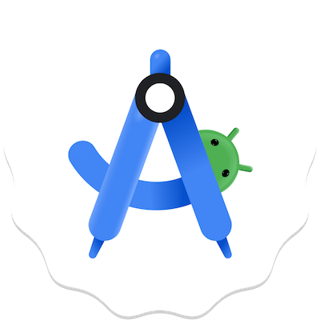
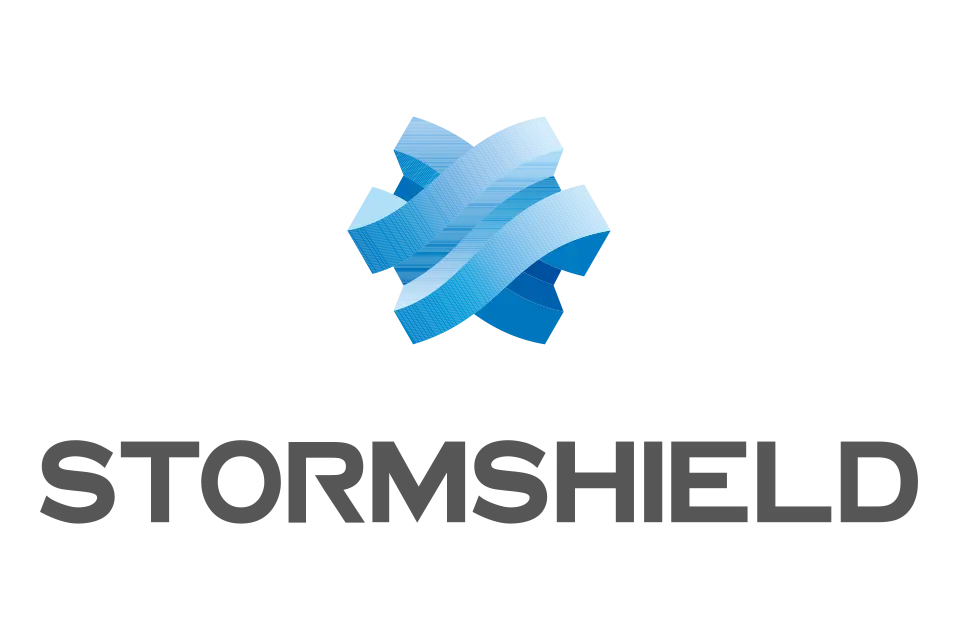

SAE 31 : Étude et mise en œuvre d'un système de transmission
Contexte : Ce projet a été réalisé au semestre 3 du BUT.
Objectif : L'objectif de ce projet était de réaliser des modulations de transmission de signal sous Matlab à l'aide d'un Adalm-Pluto.
Travail réalisé : Pour mener à bien ce projet, nous étions par groupe de deux. Nous avons réalisé des scripts pour effectuer des modulations AM, ASK, PSK et FSK. Par la suite, nous avons mis en place une transmission avec des Adalm-Pluto. Pour ce faire, nous avons émis une fréquence porteuse avec un Adalm-Pluto. Ensuite, nous avons réalisé une transmission entre les deux Adalm-Pluto en effectuant un décalage fréquentiel. Enfin, nous avons effectué une transmission FSK d'un texte en réalisant une démodulation du signal en réception.
Résultat : Nous avons bien réussi le projet et le professeur était satisfait de la présentation orale faite en fin de projet.
Mon CRSAE 32 : Programmation d'une application de messagerie
Contexte : Ce projet se réalise en autonomie par groupe de deux en deuxième année.
Objectif : L'objectif de ce projet est de créer une application de messagerie en Java sous Android Studio, comprenant un canal de discussion global entre tous les utilisateurs, qui conserve l’historique des messages.
Travail réalisé : Pour la réalisation de l'application, nous avons dans un premier temps rédigé un cahier des charges. Par la suite, j'ai codé la page de connexion et la page de création de compte. J'ai ensuite mis en place une base de données Firebase me permettant de stocker les utilisateurs avec leur nom d'utilisateur et leur mot de passe. La base de données me permet également de stocker les messages du canal de discussion. Pour finir, j'ai ajouté des éléments de design pour donner une identité visuelle à l'application.
Résultats : Notre application respectait notre cahier des charges et nous pouvions échanger en temps réel sur l'application. Le professeur de la matière était satisfait de mon travail.
Mon CR

SAE 41 : Projet Stormshield
Contexte : Ce projet a été réalisé au semestre 4 du BUT.
Objectif : L'objectif est de réaliser la configuration d'un pare-feu virtuel Stormshield dans un petit réseau.
Travail réalisé : Ce projet a été réalisé par groupe de deux. Un réseau virtuel nous était mis à disposition, contenant un serveur possédant les services suivants : serveur web, serveur de messagerie et serveur FTP, situés dans un réseau DMZ. Nous disposions d’un ordinateur client dans un réseau privé, ayant pour passerelle notre pare-feu. Nous devions suivre une série de questions sur la configuration du pare-feu Stormshield. J’ai donc configuré des règles NAT, des règles de filtrage URL et SSL, ainsi que la mise en place d’un tunnel VPN.
Résultats : L’évaluation de ce projet s’est faite en plusieurs parties durant sa réalisation, et mes résultats ont constamment augmenté au fil du projet, passant de 4/20 au premier examen à 13/20 au dernier examen.
Mon CR